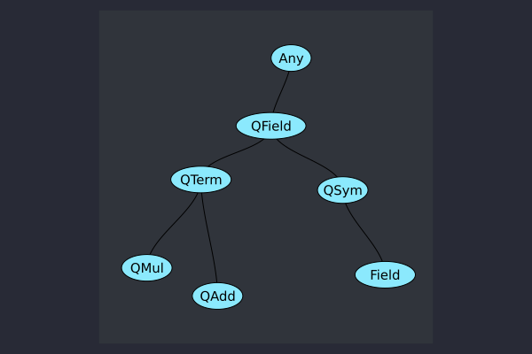

Symbolic Keldysh field algebra
The symbolic field algebra is implemented on top of SymbolicUtils.jl and TermInterface.jl. The package keeps its own concrete intermediate representation and implements the interfaces required for symbolic-tree interoperability.
The central distinction is between fundamental fields and composite expressions:
import GraphRecipes, Plots, Random
using KeldyshContraction
Plots.plot(
KeldyshContraction.QField;
method=:tree, fontsize=10, markersize=0.12, nodeshape=:ellipse
)
QSym is the abstract interface for a fundamental field and QTerm is the abstract interface for composite field expressions. Fundamental fields use the single representation
Field{S} <: QSymwhere S <: Statistics is static because statistics changes the algebraic exchange law. For example, a bosonic field has the concrete type Field{Boson}.
All other field properties are value data rather than type parameters. A Field{S} stores:
- an
Orientation(UnbarredorBarred), - a neutral
KeldyshIndex, - a
Position, - a
Regularisation, and - concrete fixed-capacity
FieldIndicesmetadata.
For bosons, the public names Quantum and Classical are semantic aliases for the two neutral Keldysh-index values. Consequently, changing a position, regularisation, or Keldysh component does not create another Julia field family.
Barred path-integral fields are represented explicitly with bar:
using KeldyshContraction
@qfields ϕ::Boson(Classical) ψ::Boson(Quantum)
(typeof(ϕ), typeof(bar(ϕ)), bar(bar(ϕ)) == ϕ)(Field{Boson}, Field{Boson}, true)bar is intentionally distinct from Hermitian adjoint. At the fundamental path-integral field level, barred and unbarred variables are independent integration variables. Physical adjoint operations remain meaningful for higher-level objects such as propagators and self-energies.
Concrete expression storage
Products and sums preserve statistics and coefficient representation in their types:
struct QMul{C<:Number,S<:Statistics} <: QTerm
arg_c::C
args_nc::Vector{Field{S}}
end
struct QAdd{C<:Number,S<:Statistics} <: QTerm
arguments::Vector{QMul{C,S}}
endThis avoids abstract-element containers such as Vector{QSym} in the symbolic IR. A homogeneous bosonic expression therefore has a concrete element type all the way down from QAdd to its fields.
Algebraic zero and one are also represented inside this IR. They are QMul values with an empty field vector and respectively zero or unit coefficient. This makes operations such as x^0, x + 0, and coefficient promotion return structurally predictable types.
Coefficient conversion is explicit. Arithmetic promotes the coefficient type according to Julia's normal numeric promotion rules, while convert_coefficients and rationalize_coefficients perform requested representation changes. Constructing an InteractionLagrangian does not inspect floating-point values and silently rationalize them.
Canonical field ordering
Every QMul is canonicalized on construction. The ordering is defined from concrete field metadata, while the sign associated with exchanging two fields is statistics-dependent. For bosons, every exchange contributes +1. This separation is the extension point used by the fermionic implementation without changing the expression storage.
Canonical ordering is part of the package IR: code should not assume that SymbolicUtils.arguments(product) preserves the order in which a mathematically commuting bosonic product was written.
SymbolicUtils and TermInterface
The package implements the standard symbolic interfaces so its concrete terms can participate in the surrounding Julia symbolic ecosystem:
using KeldyshContraction
using KeldyshContraction: SymbolicUtils, TermInterface
@qfields ϕ::Boson(Classical) ψ::Boson(Quantum)
expr = 2 * ϕ * ψ
(
TermInterface.head(ϕ),
SymbolicUtils.iscall(ϕ),
SymbolicUtils.iscall(expr),
SymbolicUtils.operation(expr),
SymbolicUtils.arguments(expr),
)(:call, false, true, *, Union{Int64, Field{Boson}}[2, ψ, ϕ])SymbolicUtils.arguments is an interoperability view and may contain the coefficient and fields in a mixed vector. Package-internal algorithms use semantic accessors such as coefficient, fields, terms, and allfields instead. This keeps symbolic-tree compatibility separate from the concrete storage contract.